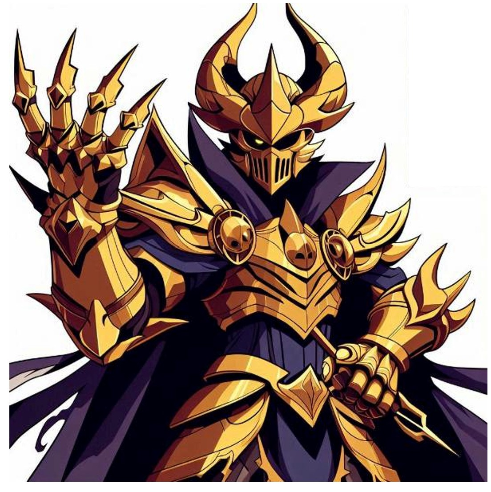
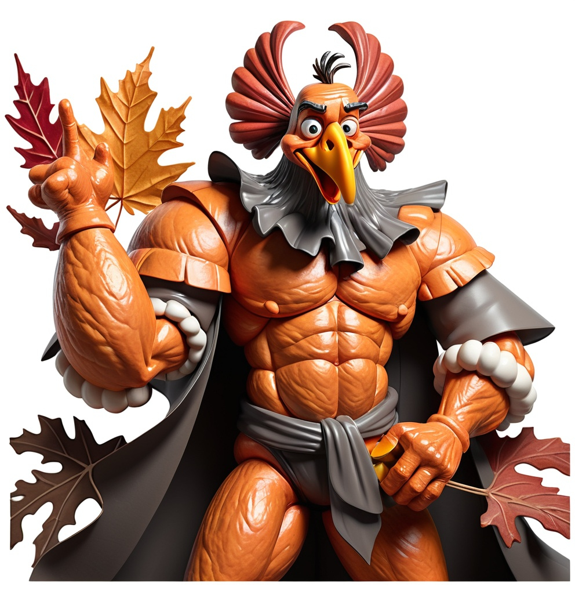

Ze Blog from Golbez

Housekeeping

Bookmark this blog
Join the Discord Group: Ask someone in the chat for a link
Like and subscribe to the @Golbez80 YouTube Channel (more content coming)
ALL TIMES IN THE BLOG SHOULD BE CONSIDERED TO BE EASTERN (US) TIME ZONE
Season 2’s Greetings (Last War Season 2)
Fam,
A lot has transpired since season 2 began and especially in the last week. There’s been far too much to go into detail. So let me instead give the best and most-efficient explanation of what is going on Wednesday at 9:30 a.m. Eastern. If you are running short on time, you can skip “What I need to know” and jump straight to the “What I need to do” section.
What I need to know
You should know by now that Season 2 is cold. Because it’s cold, we have a furnace to keep our HQs warm. But the furnaces are also like giant piggy banks. They store “Rare Soil” that is produced every hour by the cities we hold. We can’t lose our cities to other servers like we did last season, and there are server-wide rules against siezing cities from another alliance. However, we can lose rare soil during the season. The main way this happens is through Rare Soil War Events, the first of which is happeningDuring this time, certain alliances can declare war on our furnace. If they destroy our furnace, we lose over 200,000 rare soil this time. That’s about 20% of our total. The more rare soil we have at the end of the season, the higher our ranking, the better our rewards. At the same time, the more rare soil we have in our furnace, the more difficult the bracket we get put in for Rare Soil Wars.
Here’s why that’s a problem for LFG. In a prior post I talked about the risks of being a “Paper 30.” In other words, you have a gold level 30 HQ, which sounds impressive, but you got there as quickly as you could without taking the time to focus on the marching power of your squads. Basically, you are all bark and no bite.
Well, LFG is the alliance version of a Paper 30. We have had good relationships with others in our server (though that has changed some in the past week or so). Because of these good relationships, we have powerful friends who have cleared dig sites for us when they were beyond our reach and have supported our capture of multiple level 4 and level 3 cities.
This is where it gets tricky. The challenge with that approach is that we have received a lot of rare soil without necessarily earning it. Remember, the game mechanics are built to reward strength. So the assumption is that if we have a lot of rare soil, then we are really strong. But the truth is that in our case it means we have strong friends.
So where that leaves us is that we are the easiest target in our bracket. Two different alliances have declared war on our furnace because they are most likely to win a fight against us. They have to split the rewards, but a basically guaranteed half of our plunderable soil is more appealing than 100% of the soil you likely won’t win anyway from a stronger alliance. It’s the same principle as not fighting a max level Marshall because the extra rewards you get aren’t worth the added difficulty.
Now, there are game mechanics that allow us to get extra reinforcement and support from our allies in our bracket (not our allies in the server). However, though they seem nice after talking with them, we pretty much appear like a near-certain lost cause. Helping us defend our server will cost us a lot of troops. And we aren’t strong enough to offer a tempting offer of you scratch our back we will scratch yours. We are the weakest alliance in our bracket. As such we are not at the top of any of our allies’ dance cards.
In other words, expect us to be alone tomorrow against 3 more powerful alliances.
What I need to do
First things first: make every effort to be online and participate starting a little before 9:30 a.m. Wednesday morning.
Beyond that, there are some very complicated game mechanics that will happen tomorrow. I would explain them all to you if I deeply understood any of them. The best way I can describe it is that it’s sort of going to be like Capital War. Imagine our furnace is a cannon for our bracket tomorrow. Our goal is to make sure the attackers don’t destroy it. You’ll need to do everything you can to keep it reinforced. The rest of 421 with vulnerable furnaces have moved theirs to the same location. They can help us by obstructing the path to us so attackers have a longer time to travel to us, but they can’t actually help reinforce our furnace.
The good news is that for this fight, your HQ cannot be attacked, only our furnace. There normal exception applies: if you are in “the mud” you can always be hit.
Here’s why that’s a not so normal exception tomorrow. This season there’s a straight up nuclear missile that can be fired that teleports every HQ in it’s radius somewhere across the board and it turns all of the soil there into mud. So anyone who teleports in after a missile will be attacked.
Again, in sum, the idea is to reinforce the furnace like the mutant zombies. If all you can do is reinforce and the log out, we will take it. But the ideal scenario is every upstanding member of La Famiglia who is able will be online actively refreshing squads and smashing that heal button.
There are lots of YouTube videos online about Rare Soil Wars. Maybe during the next poop you take, you’ll watch one instead of doom scrolling or watching Tik Toks.
LFG,
Family Time
Mia Famiglia,
We haven’t had an official conversation about the core values of LFG
(though I’ll try to get something together over the holidays). That
being said, our number one value in LFG is a phrase that you all should
be very familiar with:
Most of us have made very strong connections with other alliance
members in this game. It makes sense. I spend more time chatting with
you all than basically anyone else in my life. You are my friends and a
support group. I believe many of you feel this way. I’ve heard as much
directly from a number of you.
At the end of the day, though, this is still a game. We all have personal lives, IRL friends and family, as well as serious responsibilities.
When we forged LFG from the ashes of PAO and the core of U5A, we decided that this would be a competitive alliance but we would never place onerous expectations on our members. We understand that some of you log in once or twice a day, contribute how you can, and then get back to your other duties. That’s ok. And sometimes you can’t make a big event like Marshall or Zombies because you had other plans. That’s fine, too. As long as you are trying at least once every day (for the most part) to put the alliance in good shape to stay competitive and you treat everyone with respect, you will have a home here. We won’t kick you over minimum points requirements if you are trying your best and staying active.
I’m bringing this up now because this is Thanksgiving Week in the US. Many of you are traveling, or you have family in town that normally are not around.
You do not owe me an apology or justification for being less available this week. The same will be true through much of December as the holiday parties grow in number.
Let’s all take care of ourselves. Let’s take care of our families.
And when we can, let’s take care of our Famiglia. And as always…
Let’s Freaking Go(bble).

Paper, Rock, Scissors
Hi Fam, today has been a day with the alliance chat full of comments about how strong we are growing. I am so proud of this alliance. And I love celebrating these achievements with you. But I’m the papa of this family and sometimes I have to say things that aren’t fun, but that doesn’t mean we don’t need to hear them. So now that we’ve had this Halloween season full of candy, get ready for a healthy serving of vegetables on your plate.
If you were around for Desert Storm and Capital Wars this weekend, you may have noticed something. Despite having many new golden HQs (level 30s), we got our butts kicked pretty hard.
This brought to mind something I saw in the world chat recently. There was someone with an HQ29 taunting all the “Paper 30s” out in the world to come and attack him.
I couldn’t help but think this weekend that we have built up quite a collection of Paper 30s in LFG. Don’t get me wrong. I am the COO (Chief Origami Officer). I don’t regret my decision to push as quickly as I did to HQ 30. It’s a huge accomplishment. And I’m so glad so many of you made the upgrade as well. It’s these types of milestones that keep us motivated to play the game.
But where do we go from here? What keeps us motivated when We are high level but keep getting slaughtered, sometimes by HQ 28s?
Rather than getting discouraged by this process of two steps forward and one step back, I’d like to ask you to join me in a new initiative for LFG: Operation Paper, Rock, Scissors
We’ve got lots of HQ30s, which makes us look good on paper. I now want us to turn those into rocks. What do I mean by this? I mean that I want us to focus on defensive strength. When we teleport next to a hospital in Desert Storm, I want us to be able to leave our main squad on the wall and watch people bounce off of us when they try and ash us. I want the same thing to happen when we are in the mud for capital wars. The way you get there is by turning your research focus to getting T10s (level 10 troops) and upgrading your heroes’ defensive properties. I want our HQs to be brick walls.
Once we get there, we turn our focus to becoming–you guessed it– scissors. And you probably already know what I mean. Once we make sure that we can defend ourselves, we then max out our offensive capabilities. The idea is that when you teleport in somewhere to attack, you don’t worry about not having a shield. You drop in, you send out your attack squad, and while they are wreaking havoc, you watch and laugh as others attack you and leave your HQs with squads ablaze and skulls instead of hero faces.
Again, I don’t mean to take anything away from the accomplishments of any of us. It took a lot of discipline and dedication (and time and resources) to get the these high levels. But now it’s time to start acting our HQs’ age so to speak.
So let’s hit the HQ gym, and we’re going to stop skipping leg day. You with me?
LFG,
Last War Updates for Mid-October
Fam, I have lots to talk about today. Make sure to check each tab.
Zombie Invasion
It’s the most wonderful time of the Last War year.
Every other Tuesday (I’m pretty sure that’s the rotation at least), we get the opportunity to hunt gold zombies on our server. Please go re-read my explanation of this event.
Server and Capital Wars
This week we are taking on 425 in server wars. Pleas make sure you are looting and plundering only from those servers. For more information about Capital Wars, go here
Secretary of Interior
The R4s have been discussing the Secretary of Interior buff from the capital. We aren’t in total agreement on how exactly it works, but in general, the buff let’s you get more resources. Here is how I am using.
I’m trying to limit resource collection from my mines and farms to twice per day. Once is right after I wake up. When you wait until you have the Secretary of Interior buff, you appear to get a boost to the resources being held in your mines and farms. The R4s and I have different opinions regarding how much more you get. But we all agree you get at least some extra. You may want to disable the shake to collect option (if you have it available). I’m so used to just shaking my phone every time I log in that I forget I’m supposed to wait for the buff and only collect twice.
Something else that is definitely clear is that you should reserve your Engineering skill for rapid production for when you have the Secretary of Interior boost. Even if you are collecting from your mines more than twice a day you should NEVER use rapid production without being Secretary of Interior.
Ghost Ops
At reset tonight we will see the return of the new weekly Ghost Ops supplement to secret tasks. I thought I’d give a quick refresher here so we can be strategic about this.
Over the course of 24 hours (Wednesday night reset to Thursday night reset), you will have several windows of time to deploy Ghost Op secret tasks. These have very good rewards, with UR versions having the potential for GREAT rewards.
To unlock the great rewards from the UR tasks, you’ve got deploy hero groupings that can be difficult to put together. Even if you have max upgraded all of your heroes, it still won’t be good enough. After all, it’s impossible to have TWO five-star Williams heroes.
The good news is that we get to help each other “staff” the crew that’s needed. Up to 5 alliance members can contribute to your squad composition. And you get rewards for assisting (there’s a limit) others in completing their tasks. So if you need two five-star Murphy heroes, I can bring mine to the squad. And others can bring along the remaining hero types needed for max rewards.
This may sound easy enough. But simple and easy aren’t the same. It’s simple to figure out how this works. But it’s not easy for all of us to staff these UR tasks for max rewards. This is because many of them require highly upgraded heroes that most of us don’t have (like 4 star Hunter). And my four-star DVA can only support one team at a time. It takes patience, and we probably won’t complete all UR tasks. But when you do, the rewards are indeed awesome.

Things to keep in mind about Ghost Ops.
- You can only deploy the tasks during certain windows of time.
- Your Ghost Op tasks can be plundered just like secret tasks.
- You can plunder other people’s Ghost Ops tasks
- Ghost Ops tasks actually get deployed on random servers (not our own). It’s possible to plunder a 421 server task on server 434 (or whatever), so please be mindful of who you are looting.
- Your Ghost Ops tasks don’t auto-deploy. If you let one expire, it’s gone. No more chances for another week.
I recorded a video last week that I can upload to YouTube but it needs some editing and narrating still and I haven’t gotten around to it.
Marshall and Zombie Siege Schedule
I recently posted a new schedule for Marshall. Disregard that information. We have new schedules.
Before the schedules, though, let’s talk about strategy. When you lose troops to Zombies, they don’t actually die. Marshall is not the same. Marshall actually kills troops. I know since Season 1 ended, most of us have had full drill grounds. We shouldn’t get used to that, though. Season 2 is just around the corner and who knows what will happen.
We don’t want to lose lots troops multiple times a week, but we also want to get the best rewards we can. It’s a balance. So we will do a mid-week Marshall at a higher difficulty level. The weekend and early week Marshall events will be easier.
Marshall can only be scheduled during fixed windows and it doesn’t workout evenly so that it’s the same time each week. With that being said, we will have A and B week schedules that look like this:
A Week-
- Sunday at 10:35: Cruising Difficulty
- Tuesday at 10:05: Challenge Difficulty
- Thursday at 10:30: Cruising Difficulty
- Saturday at 10:05: Cruising Difficulty
B Week-
- Monday at 10:05: Cruising Difficulty
- Wednesday at 10:05: Challenge Difficulty
- Friday at 10:35: Cruising Difficulty
- Sunday at 10:35: Cruising Difficulty
Refocusing after a Well-Deserved Rest
Mia famiglia!
I miss talking to you all on the blog. Season 1 was wild. Your R4s are all tremendous. Unfortunately real life came at all of them around the same time during the season. I tried to take everything on myself and at one point I ended up getting a notification on my iPad (where I run h0tcarl) that I was averaging 18 hours of screen time across my devices. That was way too much. It wasn’t just too much for me. The R4s were doing more than they really could handle, too.
Folks need a break.
As such, you can expect to see some new faces in the R4 role and perhaps a rotation. Some of you have reached out to me and expressed an interest in being promoted to R2 or R3. To be honest, I haven’t really given much attention to that distinction historically. I think your R4s have been working on a system of guidelines so you know what they are looking for to promote you. There are no added game perks for being an R3 vs an R1, but it might be useful for all of us in terms of having clear goals to work toward.
While the R4s are doing more in terms of running the show, I plan to focus my efforts on educating through the blog and the strategy guide. I really encourage you all to revisit both frequently. I regularly see members in the alliance chat say something like, “I just realized that…” Now, I’m certainly not immune to this. In fact, it was only a few days ago that I first noticed the ‘Statistics’ feature in the resources tab. But the blog and strategy guide both contain useful information and tips ranging from basic to advanced gameplay. And it’s only going to get better.
Oh… I’m also going to focus on playing the game rather than managing it. I want to get back to participating more in enemy buster on Friday nights and paying more attention to VS and arms race instead of responding to DMs about accidental truck attacks.
It’s been a long time since I blogged, so here come lots of small pieces of business before I go:
- Expect a dedicated blog post on Ghost Ops before next Thursday.
- Marshall will be on a schedule now:
- Wednesday at reset- Challenging difficulty
- Friday at 10:30 p.m.- Easier Difficulty
- Monday at resest- Easier Difficulty
- Zombies will be on a schedule now:
- Sundays at 10:10 (gives you enough time to bring your squads in from gathering resources ahead of Day 1 VS)
- Thursdays at reset
- DO NOT PLUNDER SECRET TASKS ON 421
- Now that we can plunder on other servers, don’t plunder our own.
- You should probably start setting your tasks only when you know you’ll be awake to claim them. There are WAY more people out to plunder them now.
- Server 425 did a lot to help us in season 1. We respectfully ask you not to plunder them, but you won’t get in trouble for it.
- 425 does not have a similar rule for us, so don’t complain about it. We are just trying to do something nice.
- Please do your best to just let it go when you get hit plundered
(truck or task) by someone in 421. I know there’s a rule and it’s
supposed to be a big deal. But 9/10 times it’s just a mistake or someone
new. And as much of a pain as it is for you, your truck or task was
going to get plundered anyway. And it’s a major pain for me and the R4s
to deal with the back and forth with the other R5s.
- If you get plundered repeatedly by someone from 421, please reach out to BiGb and he and I will work with you to sort it out.
- If your HQ (or any LFG HQ) gets attacked, DO NOT RETALIATE. It was almost certainly a mistake. Again, message BiGb and he and I will work it out.
- When you need or want to share the cooperative research or
construction buff, follow these steps:
- Explain in the chat what you need or want to share
- Wait for someone to speak up
- Once you’ve figured out who is going to share with you, exchange the coordinates THROUGH DM.
- By handling this through DM, we avoid the risk of having multiple people apply the buff to the same person (they don’t stack)
We’ve got big things and good times ahead. You ready? Good!
LFG
Last War Warzones (Server vs Server Wars)
This week returns us to Warzone action, which is like Alliance duel for whole servers. In this first round we are up against server #427. They are very active with a very high average HQ/Marching power. We have had to work very hard and it’s coming down to the wire. If we win, we get to go attack their server and try to take control of the capital. We will then get to mine for diamonds if we win. The rewards are amazing if your server wins repeatedly. But there are also individual rewards for participating on Saturday.
The reverse is true if we lose. Either way it all goes down Saturday morning at 10 a.m. Eastern.
So how do we win Warzone?

Various tasks throughout the week give differing levels of rewards for our server. For example, the server receives 30,000 points (daily) for each alliance that wins their alliance duel and additional 6,000 points if the daily MVP comes from one of our alliances. We get 100,000 points if we ended the day with someone from our server as the No. 1 Squad in the Apex Arena and 50,000 points for each Desert Storm victory our alliances achieve. As I discussed yesterday (scroll down more), we also get points for the world bosses: 250,000 if our server does the most combined damage to the world boss and 50,000 if the commander who dealt the most individual damage was from our server. We gain an additional 10,000 points for each member of our alliance who ended the day as the winner of their Arms Race groups.
I’ll end by discussing the place where you have the most certain chance of making a difference, regardless of your HQ level or power or how much money you spend. We gain 100 points for every successful plunder of a inter-city trade truck in our opponent’s server. This is not hard to do. And 100 points may not sound like much, but that’s 400 points per day. That’s 40,000 points per day for each full alliance. That adds up very quicky!
Although people will complain that it takes to long to cycle through the trucks to find four you can attack from a specific server, those folks are simply doing it wrong.
There are two easy ways to farm trucks from a specific servers. Follow the links below to see them in action. Essentially, though, they work like this.
- Hitchhiking: Go to the trade truck locator. Find a truck from the server you need to plunder. Click the button to attack. Even if the truck is too powerful, click it anyway as this takes you directly to that server and still gives you the option to cancel. Once you are fished with that attack or have canceled, you’ll be looking at the map of that specific server. From there you simply zoom out and scroll around the server looking for trucks.
- Teleporting: During the season, you can take advantage of the free
teleporting to take your HQ over to the opposing server. When you get
there, simply zoom out on the map and go hunt for trucks!
Remember to be patient with this. You don’t have to use all 4 plunders at once. You have the entire server day to use these approaches to go search for trucks that have great rewards, are weak enough for you to defeat, and will gain us points for the server.
Most of you would never leave points on the table during Alliance duel. You should see no difference for Warzone and try to do everything you can to maximize your points and give us the best chance to win.
Now, get out there and get to earning.
LFG
World Bosses in Last War (Butcher, Mutant Bulldog, and Frankenstein)
Hey fam, I wanted to have this ready to share earlier but adult life got in the way. Each week there are three “world bosses” available for you to attack. Typically it is a measure of your strength that provides MASSIVE rewards as you do more and more damage. During Warzone weeks (server vs server), though, it actually becomes part of the scoring components. The server that deals the most damage (in the aggregate over all combined attack damage amounts) gets extra points toward their total score.
You might be surprised that this topic deserves a whole blog post, but it’s actually more complicated than “just hit the damned thing.”
For starters, the three world bosses aren’t the same. Each one is related to the rock-paper-scissors damage mechanic (air beats tank, tank beats missile, missile beats air). The Frenzied Butcher takes extra damage from tanks. The Mutant Bulldog takes extra damage from aircraft, and Frankenstein takes extra damage from missile heroes. The boost the squads get is pretty significant, too, at a whopping 50%!!!
Now, before you get too carried away, keep in mind that the different damage buffs against each monster don’t necessarily mean you should attack with the corresponding squad type. Let’s do the math.
Let’s say that your tank squad deals 10,000,000 damage to Frankenstein, who takes extra damage from missiles. You may be tempted to think, “Hey I can do 15,000,000 damage just by switching to missile heroes!” But remember, the 50% bonus only means your missile heroes will deal 1.5x damage as they normally do. So if your tank squad typically deals twice as much damage as your missile squad, then it doesn’t make sense to swap them out. True, you’re getting 1.5x your normal missile squad damage, but your tank squad still does 2.0x your missile squad damage.
Now it can be a lot more complicated if a major reason why your tank squad is much stronger is because of the gear that you have equipped. If by swapping out your gear, you can get your two squads to comparable power, then you should give the preference to the squad that gets the boost when attacking.
If this is starting to sound confusing then you hopefully know why this topic needs its own blog post.
Oh… and I’m not finished.
It’s also possible that you should use a squad of mixed hero type. When you build your squads for everyday use, you typically put the defensive heroes up front (they have a shield icon). But these aren’t typical battles. The most effective squads for the world bosses, then, are the ones that have no defensive heroes. This means you may need to run a squad with something like 3 attacking tanks in the back row and 2 attacking aircraft (or missile) heroes up front.
I’ve asked local 421 legend Ragnar to help us visualize. First take a minute to really appreciate the glory of the drone skin he has. That thing is magnificent. After that, notice how his squad for world bosses Second/bottom squad) subs the front-row defenders of the same type for front row attackers of a different type. And he makes sure that even if the new attackers aren’t from his first squad that they still have the best possible gear, even if that means taking from his top squad just for the sake of this battle.


Ok. Here’s the final bit of complication. This mix-and-match strategy only works under “all-else-equal” conditions. Notice how all of Ragnar’s heroes are the same power and star level. You can’t see it, but they are the same skill level, too. If you have two defenders up front in your main squad who are 4-stars and level 125, you won’t do more damage swapping them out for 2 attackers who are 2.2 stars and level 97.
If they are all basically the same, though, then you really want to pay attention to the rock-paper-scissors mechanics, too.
It’s a lot, I know. But you should consider all of these factors when choosing the squad that maximizes your damage against the world boss. The best thing to do is go with your gut (you use these squads every day) and try one or two variations. Then you should use the most powerful squad (based on the damage report) for your last two or three hits.
I hope this helps. My DMs are always open for questions!
Special thanks to Ragnar for the screenshots!!!
Happy Hunting,
Season 1 Rewards and Operation Falcon (a.k.a.that gold helicopter in your HQ)
Two big items to discuss. First I talk about the need to do more stuff every day in Season 1. Next I talk about about that gold helicopter that sits in your base.
Season Rewards
Earlier today I posted here that we could grind our way through menial tasks to some big-time season 1 rewards. Upon further investigation, it turns out I was wrong. I have updated this section to correct that information.

Well, you earn those points based on how well our alliance finishes season 1 based on the number of strongholds, domestic cities (cities in our server), and foreign cities (those in other servers) we capture.
As of the time of writing this, we have already qualified for the first tier of rewards (picture below on the left). Depending on our ability to hold cities here and abroad, we will be able to change our outcome.


I haven’t decided exactly how I will dole out the season rewards (I get to assign them as R5), but I know that I will absolutely take into account how many basic seasonal points you contribute to this total. The guides below show you how you do that.
I don’t think you get anything special from this, but it does help me know who was contributing throughout the season. I don’t want someone to get a lot of rewards just because they have a high HQ power level. I want to see who was putting in the effort this season.


Operation Falcon (the golden chopper)
It has come to my attention that more than a few of you don’t know much about the golden helicopter that’s in your HQ. It’s actually really important. If you still don’t know what I’m talking about, it looks like this (photo courtesy of shortstuf028):

When you visit Operation Falcon you see the option for two different mechanics: Honorable Campaign and Special Ops. They each do very different things.
Honorable Campaign
In the Honorable Campaign tab, you are able to fight NPC squads of increasing difficulty, earning some very impressive rewards. More importantly, however, you earn Campaign Points, which can be used in the Campaign Store for even more very nice rewards. You are limited each week by the number of campaigns you can engage in, each having 20 battles. There are two many rules for me to bother typing here, especially when the Devs already explained everything. So make sure to click the info button on your in-game screen or read the second image here:


There are way too many good rewards here for me to tell you what you should buy. I will say, this, though: there are lots of good deals fro drone advancement here. I also buy all 10 of the legendary campaign chests. Each of these has a small chance to give you a Military Monument. This is a UR (gold decoration) that only is available through the honorable campaign and cannot be upgraded with universal decoration components. It’s by no means the best UR decoration in the game but it’s worth rolling the dice on these chests. You can also get these chests (and sometimes the decoration) from the normal Honorable Campaign rewards that come with each battle victory.
Now in terms of mini-game mechanics, this is just a regular squad-vs-squad setup. You do want to pay attention, though, to the differences among the three campaigns. If you aren’t aware, Last War has a sort of rock-paper-scissors mechanic for the three different hero types. Tank heroes deal extra damage to missile heroes. Missile heroes do extra damage to aircraft heroes. Aircraft heroes to extra damage to tank heroes. The “extra” is actually quite significant: 20%. It means that an air squad can sometimes take town a tank squad with a million (or more) point marching power advantage (same goes for missile vs air and tank vs missile).
This matters because Honorable Campaign is divided into three parts, each being specifically created to provided an advantage for each of the hero types. In theory, you should consider using these mechanics to your advantage. But I usually only have my main tank squad doing the campaigns because as you get into higher levels, it takes a lot longer to gain additional strength once you’ve met your match. While you take a week or two to level up your main squad, you typically will have lower level campaigns that you can handle. This definitely can become a grind once you get to the very high levels.
One last important tidbit here: Each honorable campaign battle has the possibility to randomly upgrade one of the heroes (involved in the battle) for free. This goes all the way up to level 100 for your heroes. It gets harder to milk the free upgrades after a while, though, because you need high level troops to keep winning. Still, you can try subbing them out one at a time for a while.
Special Ops
Many people start playing this game because they saw an add on social media for the scrolling shooter game play. You get to experience a bit of that in the beginning, but it eventually disappears from the main game-play experience.
At least you think it disappears. In reality, it moves to the Special Ops tab under Operation Falcon.

The Special Ops mini-game is straightforward in terms of game mechanics. However, there is some strategy you should consider.
The reward for completing Special Ops levels is free troops for your HQ. The number of troops you end each level with translates into the number of free troops that you get. This brings up two points to consider.
You should wait until much higher barracks levels to complete Special Ops so that your reward troops are high level. In reality, this means leaving Special Ops alone for months and months of real world time. You may not think the pay off is worth it. That decision is up to you.
The higher the number of troops you end each level with influences the number of troops you receive as a reward. You can earn a lot more troops by intentionally doing a bad job and memorizing the points at which you need to go to the left or the right to end with as many troops as possible. Keep in mind that you do not get to retry the levels. So if you get carried away trying to memorize the board, you just might end up completing with 3 free troops instead of 300.
Season 1 continues to be wild and confusing. I will do my best to keep us safe and competitive.
LFG
Working Together as an Alliance and as a Server
Good morning famiglia,
I have a lot to cover this morning. You may wonder how someone can have so much to say about a game, but ask my wife, I never have nothing to say about anything. There’s so much I split it into two parts. I’d appreciate if you’d read both as you have time (like when you take a poop).
Why I Got Annoyed and Left Last Night
Whether you all realize it, I often put as much or more time into organizing this game for you all as I put into playing it. That may sound odd, but the better we perform as a server, the better we perform as an alliance. And the better we perform as an alliance, the better your personal experience should be. That’s literally how the devs designed the game mechanics to work. Here’s an example of this in action: When you all open your mail on Friday night and receive a gold decoration chest as a reward from a Desert Storm event you did not participate in, you are benefiting from a lot of work. Your R4s and I have been cultivating friendships and relationships with other alliance leaders who have more experience than we do. They have shared tried and true tips and strategies with us for excelling. In addition to that, Liz and others have spent hours planning our strategy in case we are evenly matched and a fallback plan if we’re overpowered. Then we spend 45 minutes playing the match.
So by the time you open your brand new shiny Ferris Wheel, the R4s and I alone have spent hours trying to make that moment possible for all of you.
This isn’t a complaint. My favorite time of the week isn’t if/when we win VS. It’s when 97 people in the alliance open a gold decoration chest.
Here’s the complaint.
I signed off last night pretty peeved. I spent HOURS over the past week working with R4s and R5s of other alliances to get HOF off our lawn in 421. As long as they were there in our midst, we had to save and agonize over our stronghold and city captures every day so that we would be ready to defend from HOF totally annihilating our positions and forcing us and the rest of the server to the edges of the map. Last night we finalized and executed a strategic multi-alliance, server-wide plan that sent HOF packing. This meant that we were finally free to go do our own conquest of another server.
Given the deliberation you all witnessed (and the hours that you didn’t) in trying to protect our own server, you should know that other servers will likely do the same. So when we went to 422 last night, I wanted you all to listen to me and wait for my word before we attack. Because of the game mechanics, we have limited captures available each day. Additionally, you can only capture cities in other servers on two scheduled days each week. So if we screw something up, it gives that server multiple days to react and invalidate our work (like 421 did to HOF).
Believe me, I know that this is a game and it’s supposed to be fun. You want to play and do all the fun stuff. You think I don’t want that? But the reality is that you have chosen to play a cooperative game. This creates a need for coordination because what you do affects others.
I was super annoyed last night because I spent HOURS behind the scenes getting us to the point where we could go have fun playing conquistadores in 422 last night. And when you all just went off and started attacking before I finished organizing, you put all of that planning at risk of being basically worthless.
I value your time tremendously. It’s why I try to give you notice when I can ahead of fun stuff. I try to coordinate events so that you don’t have to dodge work or time with your kids to play this game or so you don’t have to stay up til midnight to participate. It’s a very difficult proposition, and it means that no one is going to get to participate in everything. That’s just how it’s gonna go. I don’t get to participate in everything either. In fact, I abstain from lots of things to make sure that others can participate. I have never been the train conductor in LFG. I don’t want to take that opportunity away from any of you. I also claim very few digs and almost always only when there are rewards still left unclaimed after the vultures have left.
So when you all ignore my requests and don’t follow my efforts to coordinate, it makes me feel like all of that stuff is just wasted. I try really hard not to treat you all that way. I just expect the same. So I apologize if it came across as childish last night for me to sign off the way I did. I just felt like my time and efforts weren’t being respected, so I stopped using them for the task.
State of the Alliance
Last night I was really disappointed. We’ve come so far as an alliance, and I really felt like we were going to be more organized last night.
There’s an organizational development framework that explains that new entities all go through the same four stages to become successful. I’ve referred to this framework or forming, storming, norming, and performing in other posts. I’m going to elaborate on it here and talk about why it matters.
Forming- This is the earliest stage when the group/team/organization is being created/launched.
Storming- In this phase there is so much work to be done, but the group hasn’t had a chance to figure “the way we do things around here.” People likely came from different places with different preferences and practices and, of course, opinions. The ensuing clashes create an often tumultuous experience full of growing pains.
Norming- Over time, new ways of doing things (norms) are created. Members of the organization are able to say things like “This is the way we handle this.” Teams will also have documented policies and practices for standard operating procedures.
Performing- In this stage, the norms have been embraced by the team. And if the norms are good ones, the team will see positive results from their efforts.
Ok. Now that the org theory lesson is over (hey, I’m a professor after all), let me draw connections to LFG in this framework.
LFG Forming- This is mostly behind us in terms of creating LFG from the remnants of PAO and the active members of U5A. However, we are still experiencing some of this every week because of new game mechanics that are being introduced with Season 1. Sometimes you all ask me what the plan is for something or how something else works, and I genuninely have no idea because it’s brand new to the game (in our server grouping at least).
LFG Storming- There was a lot of this in the first three to four weeks of us being an alliance. We were getting to know each other. We were figuring out who was in charge, what needed to be done, where we were going to put headquarters, etc… Then Season 1 came and immediately threw a wrench in a lot of that. Furthermore, many of you are/were in the lower levels of HQ status. There were lots of basic game mechanics you didn’t understand and strategies/hacks you didn’t know about. In those early weeks many of you experienced Desert Storm for the first time or you got your first honor points and bought your first blueprints. You learned the hard way why we shield on Friday night and what happens Saturday at 7:01 p.m. if you put your shield up on Friday at 7:00 p.m. before heading out to dinner. This is all ok. LFG is a teaching and growing alliance. We are not making many of the same mistakes we used to. Which brings me to our next phase.
LFG Norming- In some regards, we are in the norming phase, In fact, we are for the most part operating at this level across the alliance. Think about how many times someone has posted a tip or explanation for doing something in the game and I’ve replied with “This is the way.” Look at two examples of this in action.


The image on the is a little tricky to unpack, but you should be able to figure it out. Someone posted a link to a Doom Walker rally (which disappeared once the walker was killed). Below the rally link they typed “Fb” to signal that they were going to get First Blood rewards for this doom walker. This matters because I and other higher-powered alliance members love to help lower power squads get big doom walkers that they aren’t themselves strong enough to kill. This is worth the loss of troops for us because the first blood rewards are so good, especially if you’re an HQ23 or so and you’re getting first blood rewards from a 140 Doom Walker. But if it’s not first blood, the doom walker rewards are terrible. It’s such a bad idea for folks to lose troops to a doom walker when no one in the rally is getting first blood. So by posting something that lets us know you are after first blood rewards, high-powered allies can quickly decide if they need to jump on the rally.
The second image shows another LFG norm of reminding members when there are UR (gold/legendary) secret tasks that need assisting. This is a major way to help our alliance grow. When you complete a UR secret task without it being plundered, you not only keep all of the guaranteed rewards, but you also get a chance to get an extra map piece. If you’re doing all UR tasks each day, this quickly adds up to give you multiple complete maps and treasure chests every day. Not every person can always claim their UR tasks right when they finish. But allies have a chance to assist the task. When you do this, you get rewards for helping, and the UR task counts as perfect for your ally and can trigger the extra rewards. You only get to do this 5 times per day, though, so it’s important that everyone try and help assist all the UR tasks they can. That’s why I’m so happy when I see people who aren’t me posting these reminders. This is how we get better and stronger faster, which leads me to the next phase.
- LFG Performing- We aren’t quite here yet overall. However, there are glimpses of this level of functioning. For example, last week we had a very tough and close matchup in Desert Storm that went down to the last minute of the match. This rarely happens. The main reason we pulled off a win was because the participants had clearly taken the time to read Liz’s plan and we executed it like it called for. That win brought fantastic rewards for your all.
We also just worked tremendously well with other Alliances in the server to expel HOF from the map this season. It took a lot of coordination, but I was super proud to see so many of our HQs blocking out HOF placement so they couldn’t defend their stronghold from a PAL assault. I’ll tell you who else noticed, PAL, BWB, BDE, BBH, PCO, LKM, and other alliances in the server. They know we are dependable and helpful. Wait until we add STRONG to that list.
All of that being said, we still have a lot of work to do. Last night was a major regression. Right after a whole day of stone cold Performing to rid the server of HOF, we reverted all the way back to Storming. I couldn’t get the coordination across in chat because too many people were interrupting and not paying attention. Many of you also just went ahead and attacked a stronghold without waiting for me to give the all clear. These kinds of are holding us back.
Now, I know this is just a game. But like I said before, you have chosen to play a cooperative game and you have chosen to join an alliance. In making these choices, you are committing to working together and following instructions from leadership who are spending hours and hours trying to help you enjoy the game more. If this is all too serious for you, I totally get that. You are more than welcome to seek a different game experience in another alliance or solo. There will be zero hard feelings on my end.
For my part, though, I have chosen to be an R5 in this game and compete in a cooperative gameplay style. I will continue to expect us to get better or to choose to go elsewhere. I want each of you to stay. This isn’t meant to be a threat. It’s just an explanation of the road ahead and everyone’s choices.
Love you guys,
How do Buffs Work?
Ok, I’m pretty sure I’ve got this figured out and have found a good way to explain the way speedup mechanics work for buffs. Keep in mind that I’m not talking about speed-ups here. I’m talking about the things that give you something like a 20% boost to construction speed AND THAT MUST BE ACTIVATED BEFORE YOU START THE BUILD.
Think about buffs like currency exchange rates. The British Pound, for example is almost always stronger than the US dollar. At the time of the writing of this post, 1 GBP is worth about 1.3 USD. The time currency of this game can similarly be thought of in seconds. The baseline value of 1 second in the game is, as you might have guessed, 1 second. And it’s a real world second, too. Which is why it’s so painful when you see that your exciting new HQ upgrade is going to take 6 weeks of your actual life to complete.
Now, with no active buffs, 1 of your HQ seconds is worth the same 1 second as the game’s. But by acquiring different buffs, you improve the “exchange rate” of your seconds. This means we need to do some math now. As an example, let’s say you want to upgrade a building and the time to complete is 1 week, which is 604,800 seconds. Since your HQ seconds are also worth 1 second, we can explain the time it takes like so:
604,800 / 1 = 604,800s
In other words, this is going to take a whole week.
But remember that I told you time buffs improve the exchange rate of your seconds. So let’s say you have no other time buffs than the Secretary of Development buff, which gives you a 20% increase to your construction time. The way to figure out how this works is to swap the 1 in the denominator above for your new-and-improved seconds, which are worth 1 + .2 (20% buff) seconds, or 1.2 seconds. Now look at the time to upgrade calculation:
604,800 / 1.2 = 504,000 seconds or 5 days and 20 hours.
So what happens when you have multiple buffs at the same time?
Great question (I hope you’re glad I asked). Buffs in this game are additive. Let’s say you’ve got the Secretary of Development buff (20%), a Cooperative Development buff (10%) from your buddy in the alliance, and your alliance tech gives all members of the alliance 7.5% buff to construction speed. To figure out how much that helps you add all of those percentages to create your new exchange rate:
1 (starting value/normal IRL seconds) + .2 (SD buff) + .1 (CC buff) + .075(AT buff)
This gives you an exchange rate of 1.375 seconds. Now let’s plug this in to our calculation from earlier:
604,800s / 1.375 = ~439,855s or about 5 days and 2 hours.
This is how all percentage-based buffs work in the game, whether for healing, training, construction or research.
However, the speedups that you use aren’t percentage-based. They are just normal minutes that you subtract from the remaining time.
I hope this help you understand the mechanics a bit more.
Godspeed,
Alien Invasion
Famiglia,
You no doubt have noticed that the HOF alliance has come from another server and is working their way through our lands. In the very near future, we will almost certainly be attacked at this level 6 stronghold:

The good news is that BWB and BBH can help us defend this hold since they have adjacent territories. The bad news is that HOF is very powerful and it still may not work. BWB cannot defeat HOF alone, so our only hope is that all three of us can keep them at bay together.
There are some game mechanics we are going to be trying to exploit in the coming days and weeks. You may see us drop a stronghold, village, town, or even one of our playgrounds without explanation. We are doing this in hopes of putting those areas of the map back into protected state, meaning HOF cannot take it. BWB has run into that in the other servers they are trying to invade. We may run into it in 422. Just be patient and trust me and your R4s. We will try to communicate everything we can as quickly as we can. If you don’t know something try to find me or an online R4 and DM them. We may need the chat clear to help mobilize (I’m talking to you, Larry)
You may recall when this season started, there was a lot of server-wide drama about who would “be allotted” which cities. I participated in it. I did listen during then, too, though. And during that time, PAL, BWB, and IKY made it known that they were the ones working so hard on the previous map to defend our server from invaders while the other alliances kept to themselves. I wasn’t around and aware of all of that. I don’t know for certain that is how it went down, but I believe it.
Here’s what I know for sure. I am around now. My whole famiglia is around now. And when Season 2 gets here, NO ONE will say, “Where was LFG when the other servers came!?” They will see us in the foxholes right beside them. They will see our numbers go up in the season contribution list even if it’s just from the body count of our poor soldiers. But they will see it.
So heads up out there. Keep an eye (not a mouth) on World Chat. When you see a call for help, you go. If it’s HOF attacking, be smart. Don’t throw single squads at these big HQs. We are family. We coordinate and we rally attack. Get on discord. Work with one another. Get in the chats. Tell me or an R4. You downloaded a war game, right? Well this is it. The war is no longer coming. It is here.
LFG!
Server Wars Are Live!
Famiglia,
If you haven’t noticed, Season 1 has brought Server Wars to our very doorstep. DUring the Warzone expedition stage, we can teleport to other servers to etsablish an outpost and then go from there to conquer strongholds and even cities. The bad news it that other servers can do do that to us!
Sunday through Friday you are safe from attack, here or in other servers, provided that you do not place your HQ in the brown “contaminated soil” tiles on the map. On Saturdays, your HQ can be attacked by anyone from all servers participating in this event with us (It’s weird, but not all servers are in Season 1 right now).
Wiping Out an Invading Outpost
When you zoom out on our map right now you can see two new icons that weren’t there previously. These are Outposts in either construction/completed state or after having been destroyed. This has so far been one of the most enjoyable parts of the game for me. That past few weeks have led to a lot of bickering within our server. It has been great to see everyone come together and defend our (mostly) happy realm.
Here’s a quick video of what the madness looks like.
If you want (to try) to get a piece of the action, pay attention to the coordinates being shared for these invading alliance outposts. The video below shows how you can teleport for free to get a closer seat at the table.
Teleporting for Free Using Season 1 Server Groupings
Now head over to the Strategy
Guide and brush up on what is needed for Day 3 of VS.
Have fun out there,

Alliance VS Battles “Day 0” (Sunday)
They say an ounce of prevention is worth a pound of cure. Well, today I’m going to talk about how an ounce of preparation is worth a pound of VS points. That’s right. Earning points for Monday is something that actually starts on Sunday.
HOW DO I DO THAT!?
There are two main ways to prepare in advance for higher Day 1 point totals.
Gathering Resources
It may not be the largest point gainer, but the easiest way to earn points on Day 1 of versus is to gather resources from the resource tiles (gold mines, iron mines, and wheat fields). Actually, though, you get the points when you leave the resource tiles. This is a very important technical point because it means you can start earning Day 1 VS points before Day 1 begins. The main idea is that you make sure that when Day 1 points open for earning (around 10:05 Eastern on Sunday nights) you have squads already in the resource tiles. Once the earning window opens and you leave the tile (whether manually or automatically by gathering all the resources in the tile), you will get credit for all of the resources cashed in at that time. So let’s say for example that you began gathering gold at 3:00 p.m. on Sunday and left the tile at 10:06 p.m. on Sunday, you would get credit not only for the 6 minutes of collecting that began at server reset, but also for the 7 hours of gathering you did earlier in the day. The kicker to all of this is that you have to keep the squads in the tile until after reset. If you leave any time before 10:05, you will not receive any credit.
Saving and Researching Radar Tasks
It’s easy to get so caught up in just clicking on radar tasks that you don’t pay attention to the extra information on the screen. But there’s a lot of valuable info there that can help you maximize points and tasks and hopefully digs.
Let’s take a look at an important screen (It’s actually two screen shots combined into one). You can click the photo to enlarge, and if you’re on mobile, turn your phone sideways helps, too.

Depending on your Radar Level, you get a certain number of tasks every six hours. Tasks require two actions. The first action is completing. This requires 10 stamina per task and can include assisting an ally’s task, attacking a doom elite HQ (specially generated for the radar task), killing a doom walker, killing a doom elite, collecting from supercharged resource tiles (dramatically increased gathering speed), or hosting a dig site!
Once you complete the task, the icon on your screen will change to include a red dot. But you do not have to COLLECT the tasks as soon as you complete them! You can leave the task on the radar map and the red dot will hold its place. When you are ready to collect the task, simply tap the icon with the red dot. This two-step process allows you to complete the tasks before they expire while still holding onto them until the days when you receive VS rewards for completing radar tasks.
Keep in mind that each Radar Level has a cap to the number of tasks you can have “on hold” (completed but not collected). Once you’ve hit the max holding number associated with your level, you are likely better served collecting your 6-hour refresh number of tasks. This is because once you hit the max holding number, your refresh clock stops counting down. So if you sit on 40/40 tasks for example, once you complete them, only then will the clock start counting again. So even though you’ve been waiting a long time, you still have to wait 6 more hours for new ones.
Boosting Radar Task Points through Tech Center Research
What’s really importan in all of this is that you remember to keep playing the long game. Radar tasks are incredible sources of VS points throughout the week. But you can make them even more lucrative by maxing the radar tech in the VS Tech domain at the Tech Center. You can see more about that in my strategy guide.
Winter is Coming
Ok, fam. I’m going to say the quiet part loud. Before you read any more. Watch this video. I want you to focus on the fact that this is server 415. While you watch the video, pay attention to the numbers in front of the alliances that own the cities, giving close attention to the capital.
Server 415 is deeper into Season 1 than we are. They are deep enough into it that server wars have begun. As you can see from the video, it didn’t go well for them. It doesn’t even look like it’s their (415’s) server.
I’ll own my part as a recent complainer about the seemingly unequal distribution of the map by the top alliances in the server. I have changed my tune since seeing 415. The alliances in 421 have spent over a week now arguing about who should have rights to what level city and how there’s more than enough to go around. All of this brinkmanship means nothing, though, if we can’t defend from other invading servers. If you think the map from PAL, BWB, and IKY is tough to accept, wait til you see the map the other servers have in mind.
The top alliances in 421 have been trying to be diplomatic. I’ve asked you all to stay out of the drama in the World Chat, so maybe you haven’t seen it. But the hard truth is this.
The top 3 or 5 alliances (not based on the alliance power you see in the rankings) are genuinely the best hope we have as a server of avoiding the fate of 415. Is it possible that the top three will do better with our support? Sure, but that kind of coordination across a whole server is unlikely. Whether we or others want to admit it, we will need the top 3 to come to our aid to keep the server ours.
I would say that they feel that they, in return, desrve the best spots on the map. Even if they gave us the capital or a 6 and two fives, our alliance almost certainly could not defend them from the other servers. We’d be the equivalent of a UR truck with 4 UR shards and a 200k squad posted on it with one blue hero. No one is passing that up. So if you’re a top 3 alliance, what is the point of spreading out the top cities to weaker alliances to make them tempting targets that would be calling on you for help all the time?
I said I was going to say the quiet part out loud so here it comes. No one from the top alliances has said this to me, and I certainly don’t speak on their behalf. But if I put myself in their shoes, I could see them saying something like this:
We have spent thousands and thousands of dollars on this game that is intentionally designed to give you more power the more money you spend. We are big enough and invested enough that we get to tell you what to do. If you don’t like that, you can spend thousands and come try and take it from us. If you don’t like that, we get it. There are people out there who spend way more than even we do who are treating us the same way. But no one is making you play a game that rewards spending when you have no plans to spend a dime on it. And being free-to-play doesn’t give you some kind of moral high ground that lets you tell the spenders how to play. It’s a war game. Put on your big boy and big girl pants or go find another game that isn’t pay-to-win.
I don’t know for sure that the top 3 feel that way. I don’t think they’d say it. But you should accept that it’s probably what they want to say and then decide what you want to do because this isn’t going to change.
The good news is that I’m mostly speaking to the other alliances out there. I have heard essentially zero complaints from La FamiGlia. I think we are all content to have a good time. We may stop having a good time once the other servers get here. I don’t want that to happen. I want to give my friends and family here in LFG the best chance they have to keep enjoying the game as they have been.
To that end, understand that we will fall in line with the top alliances in the server. I’m not going to get into a shouting match with them over playgrounds and manors when it’s entirely possible that we could be wiped to the edge of the map with nothing a week from now.
If this sounds bleak and depressing, the best thing you can do is just keep grinding. The stronger we grow the longer we get to enjoy the game. That’s why I’m writing this blog and working on the strategy guide.
If you’ve got issues with this perspective please feel free to DM me. I’m happy to chat more about it.

The blog is back!
Sorry this has taken me so long to fix. I had some website deployment issues, but I should be in good shape now.
There’s been so much to cover that I haven’t been able to address. And there is still so so much more. But rather than diving into details right now about Level-Swap tickets and converting Mason to a UR hero, I’m going to zoom way out and talk about game meta and the macro-political influences of the larger game on your daily “life” in LFG.
Many of you have been confused and probably felt jerked around by the back and forth in communication. I apologize. There are many moving parts to this season for the long-established alliances. They are confused, too. I know they are because I’m talking to their leaders across multiple media platforms.
If it’s all confusing for them, then consider that, in addition to adjusting to the Season 1 changes, we are at the same time trying to grow a new alliance. It’s all just so much. We’re still in the early stages of the forming, storming, norming, and performing cycle of group/team growth and on top of all that we’re learning an entirely new game meta for season 1.
Anyway, back to politics. The new map is huge, but it has de jure rules for conquest. For example, you can’t take a level 2 town until you hold a level 1 village. And you can only siege adjacent tiles. There are more rules, but you get the idea.
In addition to those rules of conquest that the devs put in place, there are also de facto rules of conquest we have to abide by in the server. I previously talked to you all about the “haves” and the “have nots” in the server. I mentioned we were fortunate to be the “haves.” Well, it turns out we are “have nots.” And it’s the haves that run the show, regardless of you feel about it.
What I mean is that I’m pretty sure my squad of around 16 million power is the strongest in the alliance. It could be dashblue at the top, but that dude is a silent colossus from the days or yore. Even with a 16M march power, I’m outgunned by multiple HQs in 5-6 other alliances across the server. So even though we have a top-5 alliance power ranking, it’s mostly because of our combined size. But that’s just not enough to gain influence.
Think of it like this. We are kind of like Australia. We’ve got plenty of people. We’ve got koalas and dingoes and basically 95% of the most poisonous animals in the world. But box-jelly fish doesn’t beat nuclear bomb in the expanded version of global rock-paper-scissors. And when the US, China, and Russia decide something is going to happen, Australia can whine, but they just have to deal with it.
That’s where we are. So when you are looking to me (and the R4s) for clear and fast direction, know that I want to give it to you. I just can’t. The top 3 or 4 alliances are carving up the map. They have some arguably valid reasons why they are doing what they are doing that I’ll explain some a bit later in the week.
You all may think this is absurd. “It’s a game,” you say. “Let everyone get a piece of the action!” you shout. There’s truth in that. But this is a game you choose to play. And it’s pay-to-win. Oh, and it’s a game about war.
The politics and pay-to-win nature of the game aren’t going to change. If you want to keep playing, and you want to have a seat at the table, then you gotta grind for it. You gotta be smart with your moves and maximize rewards. You need to log in every day and not waste resources. Read the blog. Ask for tips. Google things you don’t know. Listen to what I tell you and don’t argue. Trust that I’m privy to lots of server-wide chatter that I don’t have time to share with everyone.
We can be top 4. I truly believe it. We may not have the money of other alliances, but we have something they can’t buy: family. They say culture eats strategy (and spending) for breakfast. Let’s show them it’s true.
You want to be at the top? Me too. Lets F$#@!^% Go !

And so it begins
Famiglia, there’s a lot going on. I hope this organization format helps. Make sure you check out info on Season 1 stuff as well as regular gameplay stuff like VS.
Season 1
We’ve learned a lot in the last day. Here’s there skinny on what we think you need to know to get started in Season 1. For now, we are only focusing on your individual gameplay and not large-scale alliance and server-wide gameplay.
Ok. There’s a virus. You need immunity. You get it from upgrading the Virus Research Institute. You need Immune Protein to upgrade the Virus Research Institute. The main way you get that is from farms. Check out the Essential Resources tab for more on that.
Zombies are way tougher in Season 1. They are infected. So as their levels get higher, you need more resistance. You get higher resistance by building and upgrading the new Virus Research Academy.


The Virus Research Institute and the Protein Farms are in the lowest right section of your HQ, an area that was previously unoccupied.
Essential Resources
There are two new currencies: Immmue Protein and Mutant Crystals. You can get them from typical free in-game mechanics like defeating monsters. You can also get through so seasonal tasks and accomplishments. And, of course, you can buy them.
- Immune Protein:
The passive way to get Immune Protein (pickle juice) is from Protein Farms. These are like other resource producing buildings in your HQ. You can upgrade them using Mutant Crystals, the other new currency in Season 1.
You start with one farm, but you can get 4 for free and a fifth if you purchase the weekly pass from the in-game store. There is a strategy to this part of the process. Follow these instructions.
- Build your first farm and upgrade to level 5
- Build your second farm and upgrade to level 10, unlocking farm 3.
- Build your third farm and upgrade to level 10, unlocking farm 4.
- Build your fourth farm and upgrade how you like.
Upgrading your weekly pass farm does not help you unlock your free farms!
Mutant Crystals:
Mutant Crystals primarily come from event accomplishments and from your first time defeating infected monseters (first blood kills). The first blood doom walker each day (first DW you kill, regardless of level) also gives you crystals. And, as you may have guessed, you can buy them from the store.

Crystals are essential for upgrading your Protein Farms.
Killing Infected Zombies
Zombies now have new information explaining the minimum recommended resistance for attacking and rallying. You get higher resistances by upgrading the Virus Research Institute.


When you attack zombies without meeting the minimum resistances, a few things happen:
- You deal less damage, especially if you are significantly under the minimum.
- More troops die than usual
- Some injured troops become infected and continue to do less damage
You can get around the resistance requirements to some extent with rallies. As long as the person who rallies meets the requirements for resistance (and power as usual), the rally should have a good chance. In this way, higher resistance squads can help carry lower resistance squads.
Doom Elites are a lot harder this Season. There is a work-around to help low-power/low-res folks. Coordinate with someone with 1250+ resistance to rally with you. You will have to launch it to get credits, and because of your low resistance, you will lose lots of troops the higher the Doom Elite level. However, if you choose a squad and remove all but 1 hero, you will make sure you take only a fraction of the normal troops into battle. That’s fine because the other person you’re working with should have the power to kill the Doom Elite for you.
If you don’t know, you remove heroes from your squad the same way you add and change them around. Go to the “Garage” just outside your wall.
Your Infected HQ
When you attack zombies that are too much for you, some of your squad
comes back infected. This is reflected in a purple icon on your HQ
(world map view). A new icon on the left of your screen also tells you
your infection level. You can share your HQ coordinates in the chat to
have your alliance fam help you clear the infection. You help clear the
infection from someone’s HQ by scouting it. ` 

Alternatively, before you get all cleaned up and disinfected by our loving fam, you should take a squad with infected troops out into the wild and attack a HQ that doesn’t belong to any alliance. I know. That’s mean. It’s a war game, though. You can either feel good about yourself or you can complete tasks for rewards like mutant crystals and immunity protein shakes. You can’t do both.

VS and Other Stuff
Don’t forget about VS. Big ticket items today:
- Radar Tasks
- Drone Data and Parts Spend
- Stamina Spend
- Gathering resources from iron mines, gold mines, and wheat fields
- You don’t get VS points until you leave the mines/fields
- Set an alarm to remind you to bring your squads home before reset at 10 p.m.
- ABG: Always Be Gathering
- Hero XP Spend
- Normally I say wait until Thursday to use hero XP in VS. You get almost 3x the VS points on Thursday as You do on Monday. However, I think a win today would be awesome. So spend them if you want!

Friday Night Lights
Famiglia,
It’s the first round of the biggest night in Last War:Survival each week for our new LFG alliance. I want to thank everyone for all the hard work, dedication and patience. I don’t know that PAL ever had close to 90% of our members at 1 million VS points. You all did that today. And many of you got out in the mud and earned you 10,000 honor points. Don’t forget to spend them only on Legendary Gear Blueprints in the honor shop!
Unfortunately, I won’t be around to celebrate and play with you all tonight. I’ve spent so much of the past week with my face buried in my phone gaming and coordinating or on my laptop writing this blog that my wife is about to murder me.
So tonight I’m putting the game down for a while and taking her out for a much deserved night on the town.
I want to take this opportunity to tell you that I’m never going to be mad at you for prioritizing real life needs over this game. This should be an escape from, not the creator of, stress in your life. Tonight, I’ll lead by example.
I leave you in very capable hands. Your R4s have been and continue to work tirelessly to make sure you all can continue to enjoy the game at a high level. Tonight they will lead your through Desert Storm and prepare you for Enemy Buster. Do me a favor and take care of the following big ticket items:
- Server reset happens at 10:00 Eastern, giving way to Day 6 of VS:
Enemy Buster
- Make sure that by 10:00 all of your squads are out from gathering and inside your HQ
- Make sure you have removed all of your squads from your wall
- Turn on your 24 hour shield
- Ideally, you should do this between 10:00 and 10:04 p.m.
- If you don’t have one, please buy one in the Alliance shop
- If you have to put your shield up before 10:00 (like I do), set an
alarm for tomorrow so you’ll know to log back in and turn another one on
(you may want to use two 12-hour shields or an 8-hour shield to finish
up tomorrow)
- If you’re signed up for Desert Storm:
- Join the Desert Storm Channel in our Discord and familiarize yourself with Lizthezard’s battle plan.
- Log in on time! Desert Storm starts at 9:00 sharp and goes until someone clearly wins or 40 minutes is up
- Be careful not to use your Healing Speedups in Desert Storm
- The troops you lose inside the event aren’t lost in your actual HQ
- Healing speed ups used during the event, however, ARE USED UP in
your actual HQ
- If you aren’t in DS, please try and stay out of the chat too much
from 9:00 to 9:40 so the team can communicate while fighting.
- If you are online tonight from 12:00 (midnight) til 2:00, you will have your first window for playing Winter Storm. It’s actually more fun in a lot of ways than Desert Storm and it’s another way to earn Honor Points. There are a few 2-hour windows for playing in WS, but the first one is super late tonight. And the second is fairly early in the morning. Check out the event and read up for more info.
Ok, that’s all. I’ve got to get ready for date night. Have fun tonight, fam.
Warm anti-hero regards,

Capital War/Capitol Conquest a.k.a “Fun in the Mud”
Famiglia,
This is the first post today. It’s all about Capital War.
Last War: Survival is clearly designed as a war game. You may have noticed that the center of the map is gray/brown with a big capital building in the middle. Each Friday from 10:00 a.m. - 6:00 p.m., the alliances in the server can battle for control of the capital. The winning alliance gets to be the President and control lots of stuff for the server.
Because this game also has server vs server mechanics, the top alliances in our server (421) have an agreement whereby they peacefully rotate control of the capital and share the rewards and responsibilites that go along with it.
For the rest of us, though, this is still an opportunity to earn Honor Points, which are arguably the most important currency in the game for reaching the highest power levels for your heroes.
Earning Honor Points in Capital War:

During the Capitol Conquest, only commanders battling in Contaminated Lands (the “mud”) will earn captial war event points.
In the Capitol Conquest, you score capital war event points by inflicting serious injuries and casualities on enemy (other 421 alliance) Units. The higher the troop level, the more event points you earn.
You’ll also earn event points when your own units die. Higher level fallen units give more points.
Once you reach a certain event point threshold, you’ll receive corresponding Honor Rewards, including honor points.


Captial War Mechanics

The actual fighting you need to do takes place ONLY IN THE CONTAMINATED ZONE. That’s the brown/gray mud in the center of the map.
There are two main ways to participate.
You find a resource tile in the in mud that has a red pick axe icon, signifying that another alliance member is in that tile. Then you attack that tile. If you lose, it means all your troops are injured or dead. That sucks, but you still are earning the chance to get honor points. And while losing troops sucks, you get VS points on Day 5 for training troops, so there’s a silver lining there, too.
You can also occupy an empty tile and either wait to be attacked or share your tile’s coordintes to World Chat so people know you want them to attack you.
The agreed upon norm in our server says any occupied tile in the mud during Capital War is fair game for attack. Don’t complain if you were just harmlessly gathering gold. ore, or food and you get murdered. It’s not safe out there. This is your fault.
That being said, some people ignore this norm and think you should only get attacked if you advertise your tile in WC. This is stupid for many many reasons, but I can’t control other folks. Most alliance leaders share my view. But you may get angry DMs from people if you attack their tile without finding it in world chat.
So best practice is to either find a tile in World Chat and attack it, or post a squad to your own tile and advertise it yourself.

Why all the fuss?
As I’ve said before: honor points are the most important late-game currency as of the time of writing this blog. And they are hard to get. You cannot upgrade your heroes’ gear beyond level 40 without them.
This is where patience comes into play. The honor point store has a LOT of tempting items for sale. Before I knew any better, I used to buy UR shards and UR decoration chests. But I wish had instead been hoarding all the Legenday Gear Blueprints I could from the beginning. My best advice is to only spend honor points on gear blueprints. You’ll be glad you did that later in the game.
Advanced Capital War Strategy
If you have a very powerful squad (~17M plus), you can basically squat on a tile, broadcast it to World Chat and just sit there while you murder all the troops that attack you.
Otherwise, Capital War takes a bit of time to get to 100,000 event points, which is when you max out the 10,000 honor points available in this event.
Finishing Faster
The mud makes everything take fover. Your squads move at a fraction of the time. Resource tile speed boosts don’t matter.
What’s more you can’t even [tile surf]. And even if you win and take over another tile, you can’t attack a second resource tile from the one you’re currently on. You have to go back to your HQ and start the journey over.
Workarounds:
Sometimes there aren’t any squads to attack at nearby tiles. Because travelin in the mud takes FOREVER, you should try to tile sure and slignshot around the mud using the reosource tiles surrounding the capital (but not in the contaminated ground). Get as close to the resource tile you want to attack and then target that one in the mud.
If you have a powerful squad and you want others to attack you, you are best served occupying a resource tile in the mud near a different alliance. You may think that it’s best to choose a tile that is close to our hive so your squad gets there faster. But LFG famiglia can’t attack your tile for honor points. So you’ve essentially made it far less appealing for the people you need to attack you to do so. By occupying a tile next to other alliances you give them more incentive to attack you. Don’t do this with a weak squad, though. Once you are defeated you are redirected strictly through the mud back to your HQ. It takes forever and you don’t want to have to do that repeatedly.
Finishing More Efficiently
While it’s true that you get event points when you lose troops, the better way to get them is by killing other people’s troops. If you have a super powerful squad, you don’t have to worry too much about this.
If your squads aren’t particularly powerful, though, you need to scout the resource tiles before you attack. If you are selective in your attacks and concentrate on squads of comparable/lower power, you have a better chance of earning your event points from troop kills rather than troop deaths.
Micro-healing
You’re probably going to lose a lot of troops on your way to 10,000 honor points (and the other rewards). If you heal them all in one go it may take you a day or more. That’s not what you want.
The good news is that Friday is a popular day for playing this game. Our alliance (LFG and U5A) has good boosts for using the help button. Every time you ask for help with healing and an alliance member pushes the help button it takes ~10 minutes off the heal time. Depending on your Alliance Center level and survivors stationed there, you can get a lot of time taken off the healing.
It’s best to try to heal in 30-75 minute batches (depending on your buffs) and ask for help each time. You can get 24 hours of dealing done in about half an hour depending on how long you stay online and how many people are active when you are.
You can also use healing speedups in a pinch, but micro-healing is best as Day 6 is the day for getting VS points for using healing speed ups.
Have fun in the mud!

The Road Ahead
Famiglia,
Congratulations and thank you for a successful merger. We’ve got PAO vets, LFG newcomers, and U5A transplants all under one roof. Some people are here for the long haul, others may find this isn’t for them. That’s ok. I’ll keep saying it: This is a game. Don’t do things that aren’t enjoyable.
Today I’m going to be releasing some more content on the strategy guide. I know today is Day 4 of VS, which is Hero upgrade day and is everyone’s favorite. The VS mechanics for Day 4 are very simple, though. So I’m going to focus on Day 6: Enemy Buster intead. I’ll explain more in the Strategy Guide throughout the day. But I want everyone to be thinking about this stuff starting now.
Shielding Up
This week we haven’t been laser-focused on winning VS, but we need to be laser-focused on preparing and learning to win VS.
Day 6 (Enemy Buster- Friday - Saturday evening) is worth 4 points in the weekly VS battle. The fastest way to earn points on Day 6 is by killing troops for the other alliance. The fastest way to help the other alliance win is to lose your troops to them. There are two main ways to prevent this:
- Buy a 24 hour shield
- You can get these in the alliance store.
- They cost a lot of alliance points.
- Prioritize buying these shields above everything else you buy in the alliance store
- Don’t deploy your 24-hour shield until 2-3 minutes have passed after
reset.
- There is a 5-minute cool down on enemey buster when you cannot attack or be attacked and earn/lose points.
- You can’t use the free teleported either.
- If you use your 24-hour shiled during the 5 minute cool down window,
it wil stay up through the entire Enemy Buster event (unless you scout
or attack a base while it’s active)
- Remove your squads from your HQ wall
- We’ve been putting our squads on the wall of our HQs a lot recently for Zombie Siege. Make sure you remove them ahead of tomorrow night.
- This shouldn’t be a big deal because your shield makes this a non-issue.
- But just in case… don’t give away kills to the enemy. Take your guys (and gals) off the walls.
- If you don’t know how to do this, ask in the chat.
Shield discipline on Friday night will be the main focus of my administration. Please do everything you can to protect your base, and by extension la famiglia.
Hero Advancement
If you haven’t used all of your Hero XP and recruitment tickets yet, try to save some for the Hero Advancement period of Arms Race (2:00 - 6:00 EDT). Double dipping is frowned upon in the salsa bowl, but we love it in Alliance Duel.
Zombie Invasion (a.k.a. “The Most Wonderful Time of the Last War Year”)
The Zombie Invasion event is live. It’s the best rotating event in the game. I’ll post some tips on it later, but there’s already a YouTube video I made on “tile surfing” that you should check out.
House keeping
Please (PLEASE) do these things today (might as well do them now):
- Join the Discord group
- Bookmark this blog
- Bookmark the Strategy Guide
- Like and subscribe to this YouTube account
Have fun out there,

Nothing about this doesn’t suck
All,
I love this game. I play it all the time. Over the past four days I’ve spent more hours than I can count trying to keep our alliance from falling apart. Nevertheless, some things are hard to do. I cannot make everyone happy. I’ve got the DMs to prove it.
The merge with U5A was a coordinated effort in discussion with multiple folks from PAO as well as other server presidents. We were at risk of losing everything we’d worked for and the merger was the best move ahead. I believed it then. I still believe it.
When we agreed to have U5A join us, there were 17 or so empty slots. U5A needed to bring over 30 or so people. At that time, PAO members were still leaving, and we have 5-10 accounts spread all across the map who hadn’t moved to the alliance in weeks. It appeared that there would be few, if any, instances of people who would need to transition to U5A, which was to become our growth and learning focused alliance.
I won’t take credit for this, but over the past four days multiple folks who appeared to be inactive began showing up in ways they hadn’t in months. It has been amazing.
It also makes the merger more difficult.
But it doesn’t make it wrong.
We want to build an alliance that is a family but is also competetive. What separates us from other alliances, I believe, is that we are more interested in earning wins through supporting and helping one another rather than spending. You’re not going to be kicked out because you can’t or don’t want to spend money.
I’m sure much of this reads as hypocritical, especially if you end up getting asked to move to U5A. But let me be clear, there is no path of “excommunication” here. If we ask you to go to U5A, you will still be a part of this family. You just wont be in the in-game LFG alliance.
You will still, however, have full access to our discord chats, this blog, more resources that are coming in the future, the support of this community, the friendship and camaraderie we have, and you will also have as much intervention as we can possibly provide if you get invaded by a strong alliance.
You will also likely have opportunities to serve in a leadership capacity in U5A. It would be amazing if that alliance became as strong as this one. This game is actually really well designed to leverage the power of alliances.
Please know that this absolutely sucks all the way around. I chose not to leave for multiple other alliances when asked this past weekend because I just didn’t want to leave so many of you behind.
My DMs are open. Please contact me if you want to complain or volunteer. There’s no reason for anyone to leave yet. But if we have to ask people to move to U5A, I will start with those who do volunteer.
While I would love for everyone who leaves to move to U5A, I understand that you may be pissed at me and not want anything to do with us. I don’t blame you. You have our blessing, whether you care or not, to try and join any other alliance that suits you.
With apologies and stress,

An Open Letter to the Family
Mia Famiglia,
I address you this way on purpose. La Famiglia means family. I spend probably 3-4 hours a day playing this game with you all. I’ve come to know a lot about you and have been blown away at how cool this group of humans is. If I’m going to spend this much time with you all, I want to know that we are in a respectful and fun environment.
At the same time, this is a game about war. There are zombies to be killed, doom walkers to be toppled, trucks to be plundered, and cities to be sacked Conquest is literally the prime game mechanic. We need to be committed to the cause and to each other. We need that ride or die mentality. When Makosa rallies a level 140 Doomie, I want you to think, “Lets freaking go!” When it’s Friday night and Desert storm kicks off, I want you to think, “Lets FREAKING go!” And when server reset flips and it’s time for Enemy Buster and that level 30 Disco Kitty lands in our base, I want you to be chill because you are in the safety of your shield. But in your heart, through your bones, deep down to your soul I want you to feel like shouting “LET’S FREAKING GOOOOOOOOO!”
It’s in this spirit that I’m announcing that we are retiring PAO Mavericks. This is a new alliance now. We are a family ready to get after it. We may not outspend anyone, but we will grind these upgrades and get each other’s backs every day. Why? Because we are family.
We are lfG: La FamiGlia
Warm anti-hero regards,

LFG
PAO Update for August 6, 2024
Famiglia,
Today is a big day. Please focus on these big ticket items first.
Big Ticket Items
NEW ALLIANCE LOCATION
- I’m going to be placing a new Alliance Marker on the West side of
the capital (Look left of the mud in the center of the map. We will be
around 10:00 on the “clock face”).
- You will have until reset tomorrow (Wendesday, August 7, 10 pm Eastern) to move there
- If you are not with us at the capital, you risk being booted from
the alliance to make room for the new U5A members merging with us.
- I want everyone to use an Advanced Teleporter instead of an Alliance teleporter
- The Advanced Teleporter allows you to choose your location rather than being automatically placed near the flag.
- Please be very deliberate and careful with your HQ placement. The goal is to arrange our alliance into strict columns and rows.
- DO NOT BE THAT PERSON WHO THROWS OFF THE WHOLE ARRANGEMENT
- You can purchase Advanced Telporters in the VIP store for 600
diamomds or in the Alliance Store for 7,500 Alliance points.


- If you cannot afford either of those and need more time, please reach out to me and we will try to work something out. You will not be allowed to remain in the alliance, however, if you are unwilling to move with us to the capital.
Golbez’s Big Marshall Blunder
I’m an idiot. I accidentally set the next Marshall event for 8 a.m. Eastern tomorrow (Wednesday) morning. I can’t change it. If you want to participate, you’ll need to teleport to the new alliance marker and be online in the morning.
I DO NOT EXPECT ANYONE TO BLOW OFF WORK OR GROWN-UP RESPONSIBILITIES FOR THIS EVENT. IT WAS A MISTAKE. I APOLOGIZE FOR THE INCONVENIENCE.
Today’s Goals
Day 2 is a good day for VS. You get rewarded for upgrading buildings. Sadly this takes a while. On the plus side, you also get rewarded for UR (gold/legendary) Trucks and Secret Tasks. Follow these pro-tips to help boost your score today:
- Pay attention to Arms Race. Don’t unwrap your completed buildings and save your construction speedups for 6:00 - 9:59 p.m. Eastern time.
- Use trade contracts to refresh your trucks and get UR ones.
- Use secret orders and diamonds to refresh your Secret Tasks to UR status
- BE PATIENT
- You don’t have to dispatch trucks and secret tasks as soon as you can. You have a 24 hour window in which to dispatch them all.
- Throughout the day you will open chests and get rewards from multiple parts of the game that may have Trade Contracts, Secret Orders, and diamonds.
- Instead of dispatching purple, green, blue and grays, wait a few
hours and see if you get more options to refresh.
- Trade contracts for refreshing UR Trucks look like this

- Secret Orders for refreshing Secret Tasks look like this

- Trade contracts for refreshing UR Trucks look like this
- Please keep an eye on the Ally Tasks tab. When your secret tasks are ready to collect, other alliances can plunder you and rob rewards. If an ally assists you, however, your rewards are protected, and you can even help folks get bonuses when they collect. It’s a win win.
- This is where you help your alliance famiglia. Check this often.
Especially on VS boost days.

- This is what I should see because my alliance assited me (this is an
old screenshot)

- This is what it looks like when your people don’t assist your tasks
and others plunder your goods and cost you bonus chances for extra map
pieces.

Golbez is very sad about this.
Ok, that’s enough for now. More of these to come. Bookmark this page. I’ll be doing most of my communicating this way.
Warm anti-hero regards,

LFG
PAO Update for August 5, 2024
PAO Famiglia,
I have huge news that should take us all in an exciting new direction. We have heard your cries for new blood in the alliance and we want you to know that you are not alone.
I have been working with Lizthezard and Ntiva very closely to work out the terms and details of an alliance merger. We have taken this very seriously because so many of us spend much of our days in and out of the game, chatting and hanging out and–hopefully-kicking some booty. Considering how tumultuous the last few days and weeks have been, we have been reluctant to do anything else that was so invasive. However, with the launch of Season 1 only a week away, we decided that now is the time to act.
TL;DR We Are Merging with U5A
After much consideration and communication, we have decided to merge with the U5A alliance. There are many reasons why we think this was the right choice. Here are a few:
- U5A is the sister alliance of PAL.
- We will continue to have protection and support of an extremely powerful alliance
- We will stay connected to many of our friends who have migrated to PAL.
- You will likely have opportunities as you grow to apply to PAL if you wish to pursue a more aggressively competitive gampeplay experience.
- U5A will bring a core of ~30 members, including three R4s who are experienced and active players.
- The U5A culture is a perfect fit to mesh with ours. They are focused on growing, learning, and teaching instead of pressuring to win VS battles each week at all costs.
Merger Mechanics
Leadership: The leader of U5A has agreed that I will remain the R5 and leader of the new merged alliance. They will bring several R4 players with them and help us cooradinate and teach.
Location We are planning to move back to the capital. We are still working on a spot, but we will notify you tomorrow. You’ll have until Wednesday evening server reset to teleport to the new assembly. Alliance teleporters are available in the shops and are very cheap (no money required). Those HQs that do not make it to the capital by Wednesday evening will be considered inactive and not interested in the merger. They will be added to our list of members that need to transition elsewhere once we merge (more on this below).
If you need help getting to the capital or can’t afford (or are out of purchases for) an alliance teleport, reach out to me (Golbez) directly. We will try to work it out so that you can wait until Friday and teleport when it is free.
We are choosing to do this before Friday evening vs for a few reasons. Most of all, though, we see this as a show of your commitment and buy in for the future of the alliance.
PAO Membership Our alliance can have 100 members. We are currently between 80-85. With 30-35 U5A members expected, there will be some reshuffling to be expected.
- For the most part, if you are active in PAO, you will almost certainly remain (if you choose to).
- We are going to go through our current membership and identify players who are inactive or rarely log in. Those will be removed from the alliance and notified. If this does not get enough spaces open for U5A, we will ask for volunteers who are interested in a new alliance.
WHICH BRINGS ME TO U5A MEMBERSHIP
U5A is not going away. Their leader, Not So Elite, is going to maintain a second account there and keep watch over it. This will be the preferred alliance for the most casual of our players. If you need to take a break for a while or you just only check your HQ a few times a week, you can join U5A to play at a leisurely pace while enjoying the protection of TWO sister alliances.
U5A will also be a place where you can go and get some experience serving as an R4 and fighting in Desert Storm. This might even be a good place for starting a second account (if you’re brave enough). The downside of moving here is that there are fewer active players, especially since the most active ones are joining us in PAO. On the bright side, U5A has existing tech and alliance bonuses, so you aren’t starting from scratch. I really think this could be a fun place for some folks who just want to play and not have one more thing to worry about.
PAO Culture
The new merged alliance will evolve and develop its own distinct culture. However, the leadership of both U5A and PAO are on the same page when it comes to building a community that promotes enjoying the game through fun, respect, growth, teaching, and learning. We will strive to be competetive through those channels. But we have no plans of becoming an alliance that puts winning above all else. There is nothing wrong with that mentality. This is not only a game, but it is a game that’s literally got WAR in the name. But that gameplay isn’t for everyone.
I know this is a lot, and I hope you’ve made it to the end here. Please keep the following in mind as we move forward this week:
Our goal is to make sure no one has to leave who doesn’t want to. We have workded very hard the last 48+ hours to keep this family together and we have no intention of ruining anyone’s game experience. It’s 100% the opposite. If you have any questions or concerns, just send a DM to Golbez or Ntiva.
Big things ahead. LFG.
Warm anti-hero regards,

PAO Update for August 4, 2024
PAO Famiglia,
Thank you again for your patience and support the past 24 hours (and more if you aren’t new). Let me start with a reminder that this is a game. Everything the leadership and I are working on is meant to help create a culture of enjoying each other and the game. At 10 pm Eastern time, we will receive our next opponent in VS. This opponent will likely be very strong since our matching was made based on our power weeks ago.
I would like to ask that this week we not stress out over VS. We have a long road ahead of us. Instead of throwing all of your resources (Speedups, Diamonds, dollars) into a VS battle we likely won’t win, apply your efforts in a way that maximizes your personal HQ growth. Everything you do to get stronger still helps the alliance. Even if we win, the rewards aren’t great for VS compared to the benefits you will get from Arms Race and upgrades you make sooner rather than later. This won’t always be our approach but it is this week.
For tonight and tomorrow, focus on the following:
- Read all Alliance Announcements and vote in the poll
- Save radar tasks until reset
- Add your soldiers on the wall of your base (click the + button in the house) for Zombie Invasion at 8 pm
- Remain online until Zombie Siege is over. Keep mashing the help button!
- Pause activity from 10-10:05 Eastern. This is good practice.
- Check the arms race calendar and try to synchronize your activities with those time frames. Arms Race rewards are awesome.
There will be a lot more info coming in the next few days. Keep logging in and check the announcements.
Warm anti-hero regards,